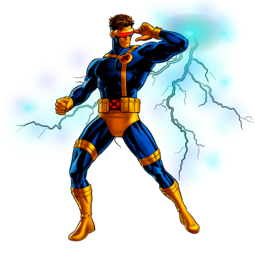

Selecione um Mutante

Ciclope
Ele tem o poder de disparar rajadas ópticas por um acidente que aconteceu com ele quando criança, mas não consegue controlá-los.



Ele tem o poder de disparar rajadas ópticas por um acidente que aconteceu com ele quando criança, mas não consegue controlá-los.